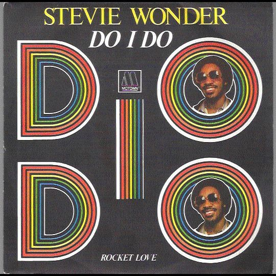

Do I Do; pasión por la música

Todo un derroche de
energía, vitalidad, ritmo y pasión por la música. Fusionando ritmos como el funk, jazz o rap, era uno de los cuatro regalos inéditos que ofrecía Stevie Wonder en su recopilatorio
Original Musiquarium I. En sus más de 10 minutos de duración en la versión del disco,
Do I Do era toda una guinda con la que Stevie Wonder cerraba y abría una etapa más en su dilatada carrera llena de creatividad y éxitos.
Todo un éxtasis musical que muy pocos artistas pueden ser capaces de generar a su público. La presencia magistral de un sólo de trompeta de
Dizzy Gillespie, la de
Nathan LaMar Watts al bajo, la frescura de la melodía, el sonido disco característico de finales de los 70 y comienzo de los 80 todavía hoy en dia sonando genial, o la interpretación vocal de Stevie
sencillamente maravillosa.
Abrazada por la genialidad de Stevie Wonder,
su magia permanece indeleble a pesar de que este nuevo milenio trata de imponer nuevos ritmos y sonidos. Do I Do se mantiene erguida y orgullosa, gallarda y hercúlea tras el paso del tiempo, porque cuando una canción se ha creado con energía natural,
ésta fluye sin aspereza y esfuerzo consiguiendo un clímax imborrable, capaz de perdurar a las marejadas y tempestades de los años, necesitando solamente unos oidos que quieran sentir y deleitarse con la
savia mágica que Stevie nos proporciona con su música.
Gracias por todo Stevie.

When I see you on the street
My whole body gets weak
When you're standing in a crowd
Your love talks to me so loud
Girl, do I do, what you do, when I do my love to you
Cuando te veo en la calle
Todo mi cuerpo entero se debilita
Cuando estás parada en la multitud
Tu amor me habla tan fuerte
Chica, lo hago, qué es lo que tú haces, cuando yo hago mi amor para ti
When I hear you on the phone
Your sweet, sexy voice turns my ear all the way on
Just the mention of your name
Seems to drive my head insane
Girl, do I do, what you do, when I do my love to you...baby
Cuando te escucho en el teléfono
tu dulce, sexy voz vuelve mi oído todo el camino en
La sola mención de tu nombre
Parece conducir mi cabeza loca
Chica, lo hago, qué es lo que tú haces, cuando yo hago mi amor para ti ... pequeña
Sss..Mmm
Yes I got some candy kisses for your lips
Yes I got some honey suckle chocolate dripping kisses full of love for you
Yes I got some candy kisses for your lips
Yes I got some honey suckle chocolate dripping kisses full of love for you
Sss .. Mmm
Sí tengo algunos dulces besos de tus labios
Sí consigo chupar un poco de la miel de chocolate que gotea besos llenos de amor por ti
Sí tengo algunas dulces besos de tus labios
Sí consigo chupar un poco de la miel de chocolate que gotea besos llenos de amor por ti
My life has been waiting for your love
My arms have been waiting for your love to arrive
My heart has been waiting
My soul anticipating your love, love, love
Mi vida ha estado esperando por tu amor
Mis brazos han estado esperando que llegue tu amor
Mi corazón ha estado esperando
Mi alma anticipando tu amor, amor, amor
From the time that I awake
I'm imagining the good love that we'll make
If to me your vibe can do all this
Just imagine how it's going to feel when we hug and kiss
Sugar, do I do, what you do, when I do my love to you...all right
Sss..Mmm
Yes I got some candy kisses for your lips
Yes I got some honey suckle chocolate dripping kisses full of love for you
Yes I got some candy kisses for your lips
Yes I got some honey suckle chocolate dripping kisses full of love for you
Desde el momento en que me despierto
Me estoy imaginando el buen amor que vamos a hacer
Si a mí su ambiente puede hacer todo esto
Imagínense cómo nos vamos a sentir cuando nos abrazemos y besemos
Azúcar, lo que hago, lo que hace, cuando lo hago mi amor ... bien
Sss .. Mmm
Sí tengo algunos dulces besos de tus labios
Sí consigo chupar un poco de la miel de chocolate que gotea besos llenos de amor por ti
Sí tengo algunas dulces besos de tus labios
Sí consigo chupar un poco de la miel de chocolate que gotea besos llenos de amor por ti
My life has been waiting for your love
My arms have been waiting for your love to arrive
My heart has been waiting
My soul anticipating your love, your love, your love
Mi vida ha estado esperando por tu amor
Mis brazos han estado esperando que llegue tu amor
Mi corazón ha estado esperando
Mi alma anticipando tu amor, amor, amor
Ladies and gentlemen,
I have the pleasure to present on my album
Mr. Dizzy Gillespie...Blow!
Blow, blow, blow, blow, blow, blow!
Do I do, what you do, when I do my love to you
Yes I got some candy kisses for your lips
Yes I got some honey suckle chocolate dripping kisses full of love for you
Yes I got some candy kisses for your lips
Yes I got some honey suckle chocolate dripping kisses full of love for you
Damas y caballeros,
Tengo el placer de presentar en mi álbum
Sr. Dizzy Gillespie ... Blow!
Blow, golpe, golpe, golpe, golpe, golpe!
Hago lo que hago, lo que haces, cuando hago mi amor para ti
Sí tengo algunos dulces besos de tus labios
Sí consigo chupar un poco de la miel de chocolate que gotea besos llenos de amor por ti
Sí tengo algunas dulces besos de tus labios
Sí consigo chupar un poco de la miel de chocolate que gotea besos llenos de amor por ti
My life has been waiting for your love
My arms have been waiting for your love to arrive
My heart has been waiting
My soul anticipating your love, your love, your lo-o-ove
Mi vida ha estado esperando por tu amor
Mis brazos han estado esperando que llegue tu amor
Mi corazón ha estado esperando
Mi alma anticipando tu amor, amor, amor
Oh, I don't care how long it might take
'Cause I know the woman for me, you I'll make
And I will not deny myself the chance
Of being part of what feels like the right romance
Girl, do I do, what you do, when I do my love to you, oh yeah
Oh, no me importa cuánto tiempo podría tomar
Porque yo conozco a la mujer para mí, que me va a hacer
Y no voy a negarme la oportunidad
Por ser parte de lo que se siente como el correcto romance
Chica, lo hago, qué es lo que tú haces, cuando yo hago mi amor para ti, oh sí
Yes I got some candy kisses for your lips
Yes I got some honey suckle chocolate dripping kisses full of love for you
Yes I got some candy kisses for your lips
Yes I got some honey suckle chocolate dripping kisses full of love for you
Yes I got some candy kisses for your lips
Yes I got some honey suckle chocolate dripping kisses full of love for you
Yes I got some candy kisses for your lips
Yes I got some honey suckle chocolate dripping kisses full of love for you
Yes I got some candy kisses for your lips
Yes I got some honey suckle chocolate dripping kisses full of love for you
Sí tengo algunas dulces besos de tus labios
Sí consigo chupar un poco de la miel de chocolate que gotea besos llenos de amor por ti
Sí tengo algunas dulces besos de tus labios
Sí consigo chupar un poco de la miel de chocolate que gotea besos llenos de amor por ti
Sí tengo algunas dulces besos de tus labios
Sí consigo chupar un poco de la miel de chocolate que gotea besos llenos de amor por ti
Sí tengo algunas dulces besos de tus labios
Sí consigo chupar un poco de la miel de chocolate que gotea besos llenos de amor por ti
Sí tengo algunas dulces besos de tus labios
Sí consigo chupar un poco de la miel de chocolate que gotea besos llenos de amor por ti
Girl, I've got some chocolate kisses for your lovin'; baby, oh yea
Do you want some candy?
Do you want some honey suckle?
Do you want some chocolate dripping kisses full of love for you?
Girl, if you felt everything you heard me say
Turn your feelings in your heart back to me right away
And I'll get it
Chica, tengo algunos besos de chocolate por tu amor; pequeña, oh sí
¿Quieres un caramelo?
¿Quieres un poco de miel dulce?
¿Quieres un poco de chocolate que gotea besos llenos de amor por ti?
Chica, si tú sientes cada cosa que me oyes decir
Convierta tus sentimientos para que tu corazón vuelva a mi en el camino correcto
Y lo conseguiré
Do I do (do I do)
What you do (what you do)
When I do my love to you
Do I do (do I do)
What you do (what you do)
When I do my love to you
Do I do (do I do)
What you do (what you do)
When I do my love to you
Lo hago (lo hago)
Qué haces tú (qué haces tú)
Cuando hago mi amor para ti
Lo hago (lo hago)
Qué haces tú (qué haces tú)
Cuando hago mi amor para ti
Lo hago (lo hago)
Qué haces tú (qué haces tú)
Cuando hago mi amor para ti
Do I do (do I do)
What you do (what you do)
When I do my love...Nate!
I know the record is about to end
But we're just going to play and play until it goes away
So if you don't like the groove you can turn the record off
It won't cost you nothin' but a penny and you'll have a cough'
I know I cannot ryhme 'cause I ain't like a friend of mine
but I hai ha ha ha....
(jive rap)
Now everybody's talking about the jive is in...
Well I know I've got something for your body...
Earl...Earl
Earl playing by himself, man...
Earl playing by himself, man...
Earl playing by himself, man...
Dennis playing by himself, man...
five, four, three, two, one.
Lo hago (lo hago)
Qué haces tú (qué haces tú)
Cuando hago mi amor ... Nate!
Sé que la grabación está por terminar
Pero sólo vamos a jugar y "rollo" puedes parar la grabación
No le costará nada más que un centavo y usted tendrá una tos
Sé que no puedo rimar porque no es como un amigo mío
pero hai ja ja ja ....
(rap jive)
Ahora todo el mundo está hablando de la jerga está en ...
Bueno, yo sé que tengo algo para su cuerpo ...
Earl Earl ...
Earl jugando por sí mismo, el hombre ...
Earl jugando por sí mismo, el hombre ...
Earl jugando por sí mismo, el hombre ...
Dennis jugar por sí mismo, el hombre ...
cinco, cuatro, tres, dos, uno.